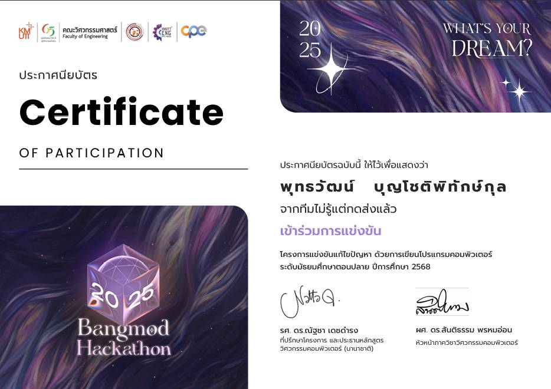
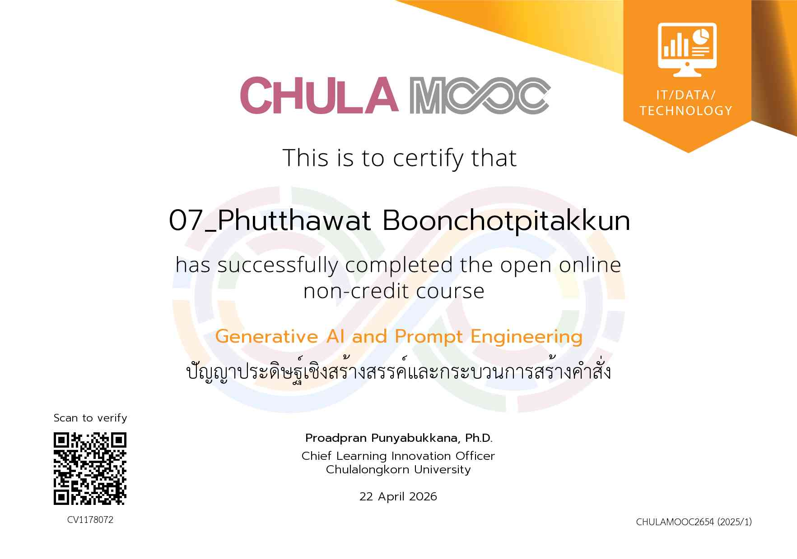
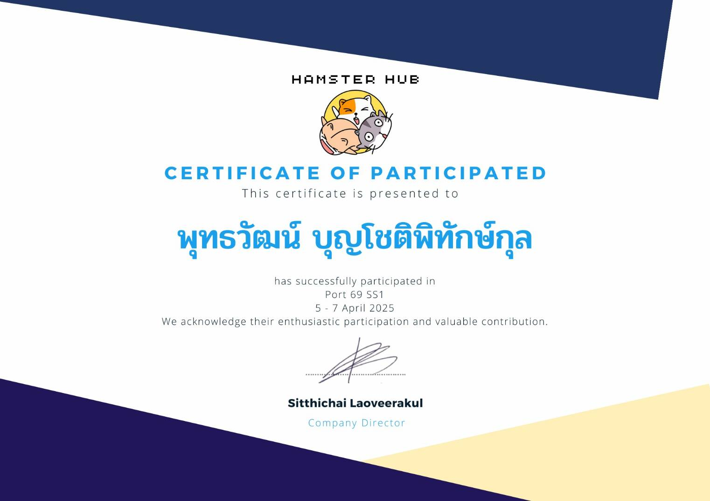
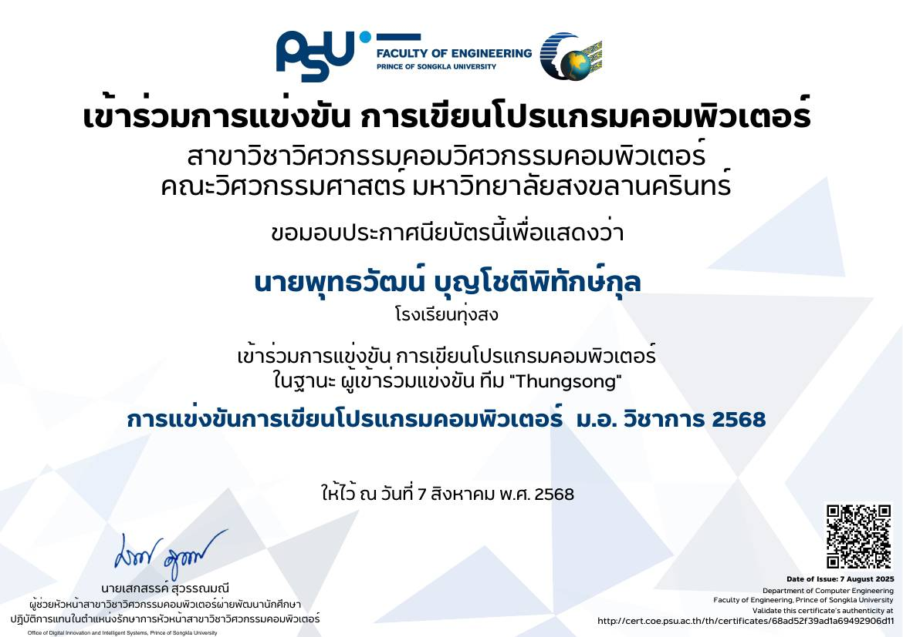
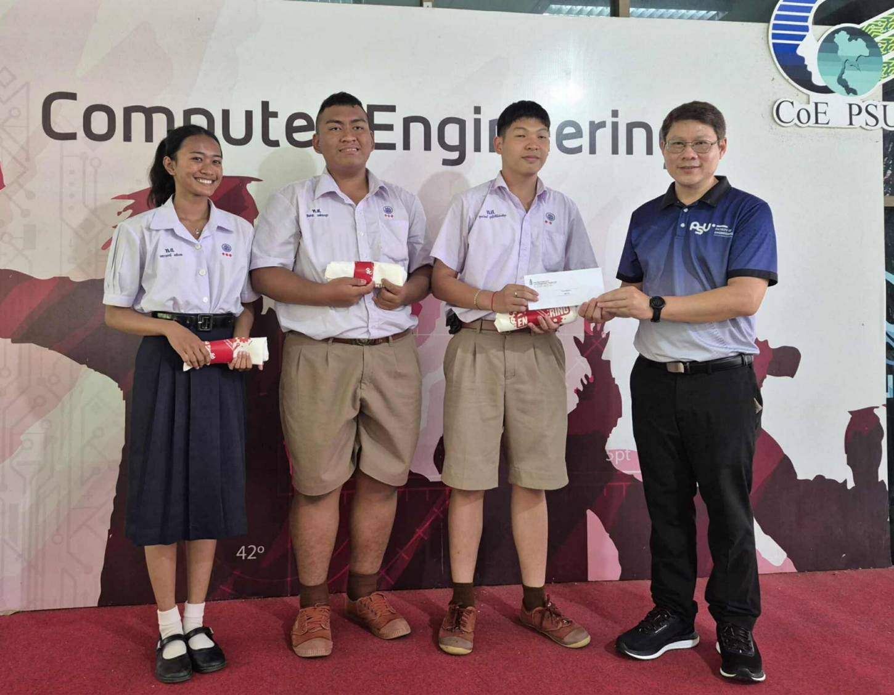
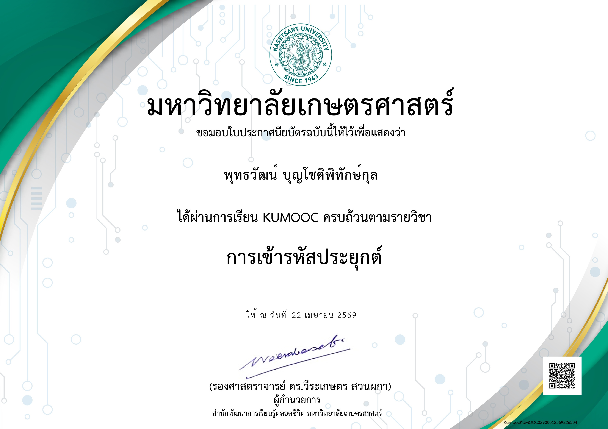
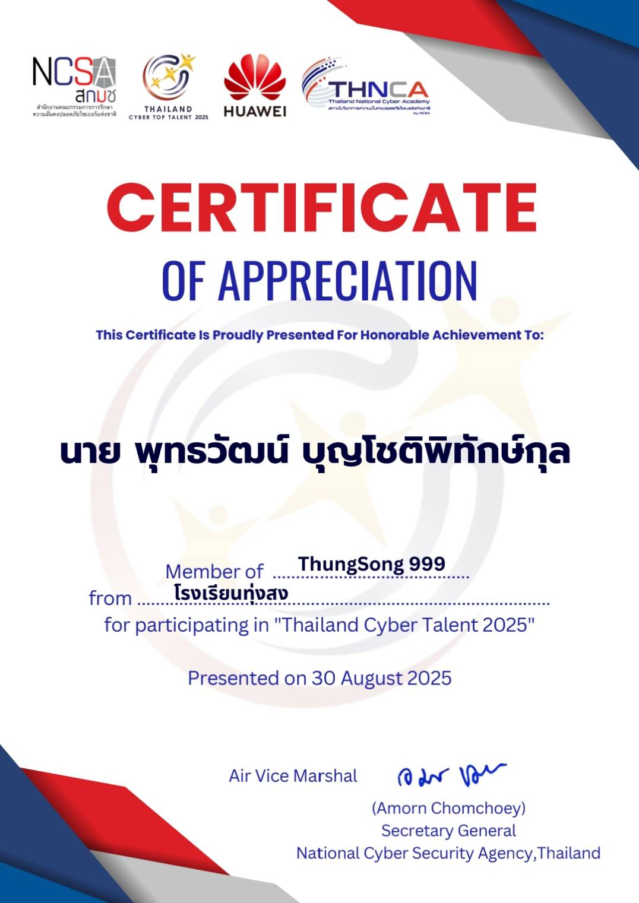
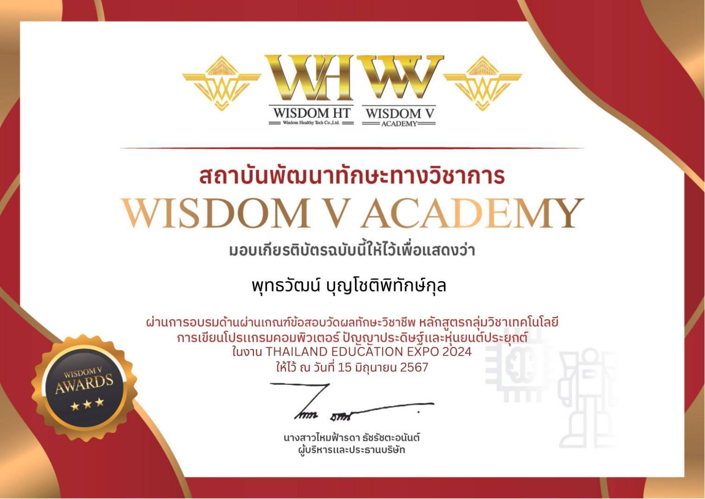

Portfolio

Bangmod
เป็นการแข่งขันนprogramming ที่จัดขึ้นโดยมหาวิทยาลัยเทคโนโลยีพระจอมเกล้าธนบุรี (KMUTT) ซึ่งมีวัตถุประสงค์เพื่อส่งเสริมและพัฒนาทักษะการเขียนโปรแกรมของนักเรียน โดยการแข่งขันนี้จะมีการทดสอบความสามารถในการแก้ไขปัญหาทางโปรแกรมมิ่งในรูปแบบต่าง ๆ และเป็นโอกาสที่ดีสำหรับนักเรียนที่จะได้แสดงความสามารถและเรียนรู้จากประสบการณ์การแข่งขัน

Basic ROS Robotics
เป็นการอบรมออนไลน์ที่เน้นการสอนพื้นฐานของ ROS (Robot Operating System) ซึ่งเป็นเฟรมเวิร์กที่ใช้ในการพัฒนาและควบคุมหุ่นยนต์ โดยในหลักสูตรนี้จะมีการสอนเกี่ยวกับการติดตั้ง ROS, การสร้างแพ็กเกจ, การเขียนโค้ดสำหรับควบคุมหุ่นยนต์ และการใช้งานเครื่องมือที่เกี่ยวข้องกับ ROS เพื่อให้ผู้เรียนสามารถเริ่มต้นพัฒนาหุ่นยนต์ได้อย่างมีประสิทธิภาพ

Edge AI with Edge Impulse
เป็นการอบรมออนไลน์ที่เน้นการสอนพื้นฐานของ AI ที่ใช้ Edge Impulse ในการสร้างโมเดลการเรียนรู้ของเครื่องบนอุปกรณ์ขอบ (Edge Devices) ซึ่งช่วยให้สามารถประมวลผลข้อมูลได้ทันทีโดยไม่ต้องส่งข้อมูลไปยังคลาวด์

Engineering Fundamentals Electronics
เป็นการอบรมออนไลน์ที่เน้นการสอนพื้นฐานของวิศวกรรมอิเล็กทรอนิกส์ ซึ่งครอบคลุมหัวข้อต่าง ๆ เช่น วงจรไฟฟ้า, อุปกรณ์อิเล็กทรอนิกส์, การออกแบบวงจร และการใช้งานเครื่องมือที่เกี่ยวข้องกับอิเล็กทรอนิกส์ เพื่อให้ผู้เรียนมีความเข้าใจและสามารถนำไปประยุกต์ใช้ในโครงการต่าง ๆ ได้อย่างมีประสิทธิภาพ

Python Programming for AI & Data
เป็นการอบรมออนไลน์ที่เน้นการสอนพื้นฐานของการเขียนโปรแกรมด้วยภาษา Python สำหรับการประยุกต์ใช้ในด้าน AI และการวิเคราะห์ข้อมูล โดยในหลักสูตรนี้จะมีการสอนเกี่ยวกับโครงสร้างของภาษา Python, การใช้งานไลบรารีที่เกี่ยวข้องกับ AI และ Data Science เช่น NumPy, Pandas, และ TensorFlow เพื่อให้ผู้เรียนสามารถพัฒนาโมเดล AI และวิเคราะห์ข้อมูลได้อย่างมีประสิทธิภาพ

CHULA Project
เป็นการศึกษาออนไลน์อบรมและมีสอบย่อยเรื่องของCHULA MOOC ที่เกี่ยวกับการใช้AIและการวิเคราะห์ข้อมูล ซึ่งเป็นหลักสูตรที่จัดทำโดยมหาวิทยาลัยจุฬาลงกรณ์ (Chulalongkorn University) เพื่อให้ผู้เรียนมีความรู้และทักษะในการประยุกต์ใช้ AI และการวิเคราะห์ข้อมูลในงานต่าง ๆ ได้อย่างมีประสิทธิภาพ

HamsterHub
เป็นค่ายสอนเรื่องโปรแกรมมิ่งและโปรเจ็คงาน ซึ่งที่นี้มีพี่ที่มาให้ความรู้และสอนพวกเขาติดมหาวิทยาลัยต่างๆเช่น เกษตร จุฬา และ พระจอมเกล้า ซึ่งในค่ายนี้พี่เข้าได้ให้ทำโปรเจ็คงานเพื่อแข่งและยื่นพอร์ต

Idea Canvas
เป็นหลักสูตรออนไลน์ที่เน้นการสอนแนวคิดและเทคนิคในการสร้างแผนผังไอเดีย ซึ่งช่วยให้ผู้เรียนสามารถพัฒนาและจัดการไอเดียใหม่ ๆ ได้อย่างมีประสิทธิภาพ

PSU Project
เป็นโครงการแข่งขันโปรแกรมมิ่งที่จัดขึ้นโดยมหาวิทยาลัยสงขลานครินทร์ (PSU) ซึ่งมีวัตถุประสงค์เพื่อส่งเสริมและพัฒนาทักษะการเขียนโปรแกรมของนักเรียน โดยการแข่งขันนี้จะมีการทดสอบความสามารถในการแก้ไขปัญหาทางโปรแกรมมิ่งในรูปแบบต่าง ๆ และการแข่งขันนี้ทีมของผมได้อันดับ2

PSU Image Project
เป็นภาพประกอบที่ได้อันดับที่ 2 จาก 29 ทีม ในการแข่งขันนี้

KUMOOC
เป็นหลักสูตรออนไลน์ที่จัดทำโดยมหาวิทยาลัยเกษตรศาสตร์ (KU) ซึ่งทำให้ได้ใช้งานการใช้รหัสประยุกต์

THNCA
เป็นหลักสูตรการแข่งขันออนไลน์ที่จัดทำโดย Thailand National Cyber Academy เพื่อหาผู้มีความสามารถในการรักษาความปลอดภัยทางไซเบอร์ไปแข่งันระดับประเทศ

Wisdom
เป็นโครงการที่ให้คำแนะนำต่างๆในการศึกษาคณะและมีการสอนการทำโปรเจ็คไปใช้ในรอบportfolioและมีการทำจริง